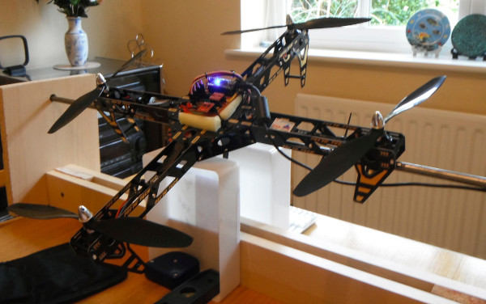

After several weeks off nothing happening, then hitting problems with the filtering i've finally found sometime to get some work done on my project. This week I have been getting the rotors running, which is surprisingly simple no that I know how it all works.
With my project being based on an Arduino Nano processor I was able to use the Servo Library, although this is mainly aimed at controlling servo's it also works for ESC's. This allows me to comunicate to the servo's using a simplified interface, not having to worry about the interrupts, and timing cycles. This does come at the cost of code size ad run speed, but if this becomes a problem I can always go back and take another look at it.

The code I created uses 3 main functions, with another one for testing, these functions are:
- initRotor - This function initiales the servos, and sets an initial value off zero.
- rotorSet - This function takes the 4 integer values representing the rotor speeds and sets each off the rotors to them.
- rotorStop - This is used to stop the rotors, I may remove this function but has been useful in testing when it all goes wrong.
- rotorTest - This has been mainly used for testing, running each rotor up for a short period of time individually before starting the next, again this will probably be removed from the final code .
The code is shown here, although its very simple
//the code to control the rotor speeds
#include Servo.h;
Servo rotor1;
Servo rotor2;
Servo rotor3;
Servo rotor4;
void initRotor() {
//attach the servos, to stop them from beeping
rotor1.attach(3);
rotor2.attach(5);
rotor3.attach(6);
rotor4.attach(10);
//This will then set all the rotors to zero rotorSet(0, 0, 0, 0);
}
void rotorSet(int speed1, int speed2, int speed3, int speed4) {
//speed values must be given as 0-1000, to update power
rotor1.writeMicroseconds(speed1 + 1000);
rotor2.writeMicroseconds(speed2 + 1000);
rotor3.writeMicroseconds(speed3 + 1000);
rotor4.writeMicroseconds(speed4 + 1000);
}
void rotorStop() {
//this function stops al the rotors
rotor1.writeMicroseconds(700);
rotor2.writeMicroseconds(700);
rotor3.writeMicroseconds(700);
rotor4.writeMicroseconds(700);
}
The code is mainly driven by the writeMicroseconds operation off the servo object, this allows for the updating off the servo pulse width, which is normally defined as between 1000 and 2000 Micro Seconds, representing the minimum and maximum output respectively from the ESC that they will drive. The reason that the stop function uses the lower value off 700, is to ensure that it falls outside the tolerances off the ESC timing preventing any movement from the rotors.
These 4 functions provide all the required functionality that my quad rotor will need for this project. The big tasks that I hope to get done in the next week include the filtering, and the PID control so I should soon have this quad rotor off the ground.